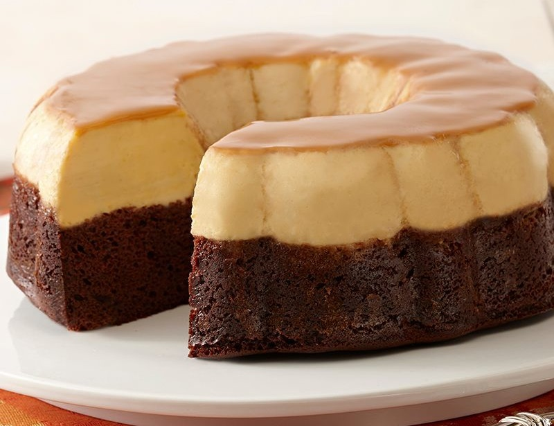

Descriere
Aceastei rețete i se mai spune Prajitura Imposibila pentru că dupa coacere straturile de cremă de zahăr ars și blat se inversează. Dupa mine i-aș zice prajitura rapida (un fel de negresă cu cremă de zahăr ars) și imposibil de gustoasă, anume in această variantă de mai jos, ieftina, accesibilă și de efect.
Ingrediente
| Ingredient | Cantitate | Unitatea de masura | Observații |
|---|---|---|---|
| ou | 10 | bucați | 8 în cremă și 2 în blat |
| zahăr | 425 | grame | 200g - caramel, 100g - cremă, 125g - blat |
| lapte | 1.100 | litru | 1 litru in cremă și 0.100 litri in blat |
| esență de vanilie | 1 | sticluță | |
| ulei de floarea soarelui | 0.100 | litru | |
| faina alba | 160 | grame | |
| praf de copt | 1 | linguriță | |
| cacao pudra | 2 | linguri |
Mod de preparare:
-
Înainte să vă apucați de reteță asigurați-vă că aveți o tavă adancă (~33x23cm2) în care să încapă într-o altă tavă adancă
Prajitura se coace la bain-marie (cu baza in apa), deci tava dedesubt trebuie să o cuprindă pe cea cu prajitura
-
Prepararea caramelului: se adaugă în tava cele 200g de zahăr și se lasă pe foc până ce se topeşte și formează o glazură
Rostogoliți vasul, pana ce glazura acoperă toată suprafața acestuia - Prepararea cremei: într-un bol se pun 8 oua, 100g zahar, 1 litru de lapte și esența de vanilie care se amestecă bine cu mixerul 2-3 minute
-
Prepararea blatului: într-un bol se pun 2 oua, 125g zahar, 100ml ulei, 100ml lapte, 160g faină, 1 lingurită praf de copt și 2 linguri de cacao care se amestecă cu mixerul, 2-3 minute
Trebuie să fie asemenea un aluat lichid și dens, ca o smantană mai groasă -
Se toarnă în tava, peste caramel, crema de lapte și oua, iar peste se toarnă blatul de cacao
* Nu vă chinuiți să-l distribuiți prea uniform, el se va uniformiza și distribui perfect în timpul coacerii - doar e prajitura imposibilă - Se pune tava cu prajitura in tava mai mare, turnați apă în tava de la baza și puneți toată compoziția asta în cuptor preîncălzit la 180° C pentru 45-50 de minute
- Se scoate din cuptor și se lasă să se răcească complet
-
Se poate servi și imediat după ce se răcește, așa la temperatura camerei
* Ideal este să o puneți după ce s-a răcit pentru cateva ore la frigider, acoperită eventual tava cu o folie de plastic -
Se trece cu cuțitul pe marginea blatului de deasupra, se acoperă tava cu o tavă mai mare și după se întoarc cu susul în jos
Scuturați ușor și se așteaptă până ce se desprinde prajitura de tava de sus
Se ia tava de deasupra și prajitura este gata de tăiat și servit
* După cel puțin o jumăte de oră blatul se va insiropa cu sosul de caramel și prajitura va fi foarte fragedă și aromată